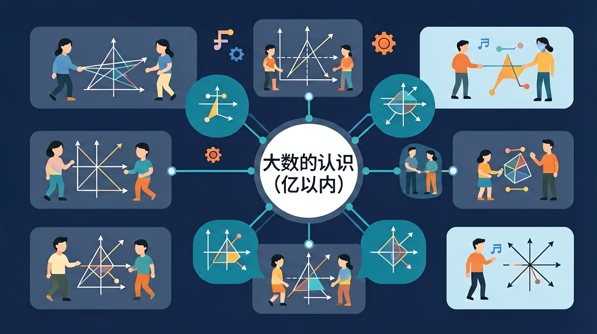

🌍 And（已知）：我们已经有了一定的基础知识
⚡ But（问题）：但还有一个重要概念需要深入理解
💡 Therefore（新知）：因此通过本节课的学习，我们将掌握新知识并能灵活运用
🎯 能说出亿以内数位的名称和顺序
🎯 能判断两个大数的大小关系
🎯 能分析生活中大数的实际意义
❓ 为什么电话号码不用大数表示？
❓ 一亿粒米够我们班吃多久？
❓ 数位越多就越大吗？
学完这一课，这些问题你都能自信地回答。
10 个一万是？
✨ 从万到亿，感受数的神奇！
And：学生已会读写万以内数
But：遇到十万、百万时容易漏写零
Therefore：建立数级概念规范读写
像叠积木一样，每四个数位是一级！个位、十位、百位、千位叫个级，万位到千万位叫万级。比如305万要写成3,050,000——先写万级的305，再补全个级的四个0。记住逗号是分级小助手，每三位标一个。
🌍 看新闻说‘天问一号飞行里程达4亿千米’，这个4亿就是400,000,000。数数有多少个零？原来1亿是1后面跟8个零呀！
六百万零三十写作：
中国人口约 14亿 = 1,400,000,000（十四亿）
全球人口约 80亿 = 8,000,000,000
北京到上海的距离约 1300千米 = 1,300,000米
大数让我们能描述世界上任何数量！
| 级 | 亿级 | 万级 | ||||||
|---|---|---|---|---|---|---|---|---|
| 数位 | 千亿 | 百亿 | 十亿 | 亿 | 千万 | 百万 | 十万 | 万 |
| 计数单位 | 千亿 | 百亿 | 十亿 | 亿 | 千万 | 百万 | 十万 | 万 |
| 数值 | 10¹¹ | 10¹⁰ | 10⁹ | 10⁸ | 10⁷ | 10⁶ | 10⁵ | 10⁴ |
读数规则：
写数规则：
比较规则：
① 位数多的数更大
② 位数相同时，从最高位比较，哪位数字大就更大
根据某市统计局公布的人口数据，分析城镇和农村人口的比例关系
And：已会比较万以内数大小
But：位数相同的大数容易比错
Therefore：掌握分级逐位比较法
比较大数就像赛跑：先看谁位数多（比如8位数肯定赢7位数）。位数相同时，从最高级开始比！例如比3,870,500和3,807,050：先看万级都是387，再看千位0<7，所以3,870,500更大。
🌍 超市两种矿泉水销量：怡宝年销12,500,000瓶，农夫山泉15,200,000瓶。比比看哪个数字大？记住先数位数再从左往右比！
下列最大的是：
用计数器逐级拨出百万、千万、亿
数位像楼梯，每级代表不同数量级
先比位数，位数相同就从高位逐位比
用大米堆积动画展示百万粒和亿粒的视觉差异
用人口普查数据练习读写大数
🎯 把大数和读法配对！
大数
读法
学习要用心，理解比死记更重要；多问"为什么"，把知识连成网
💡 常见错误往往就在细节中，仔细检查每一步！
回忆：今天学了哪些关键词和规则？试着说出来。
用自己的话解释今天学的核心概念，不看书能说清楚吗？
用今天的知识解决一个实际问题，或写一个新例子。
把今天的知识与已有知识联系起来：有什么共同点？有什么区别？能不能自己创造一道新题？
先独立作答，再点选项查看对错与错因。
下列哪个数读作'七百八十五万六千三百四十二'？
在数 7,856,342 中，'5'所在的数位是：
将 5,432,789 写成汉字，正确的是：
在数 2,423,553 中，'2'所在的数位分别是____和____。
答案：百万位,万位
从右往左数，第七位是百万位，第五位是万位
将'六百三十四万五千二百一十七'写成数字是____。
答案：6,345,217
正确对应了每个数位的写法和位置
✅ 分级读：四十万零五百
💡 未掌握'零'的占位规则
✅ 比较首位数字：1<9
💡 只关注'0'的数量忽略有效数字
口诀：个十百千万，四位一级跳，左边添零继续跑
类比：数位像快递柜，小格放个位，大柜放万位